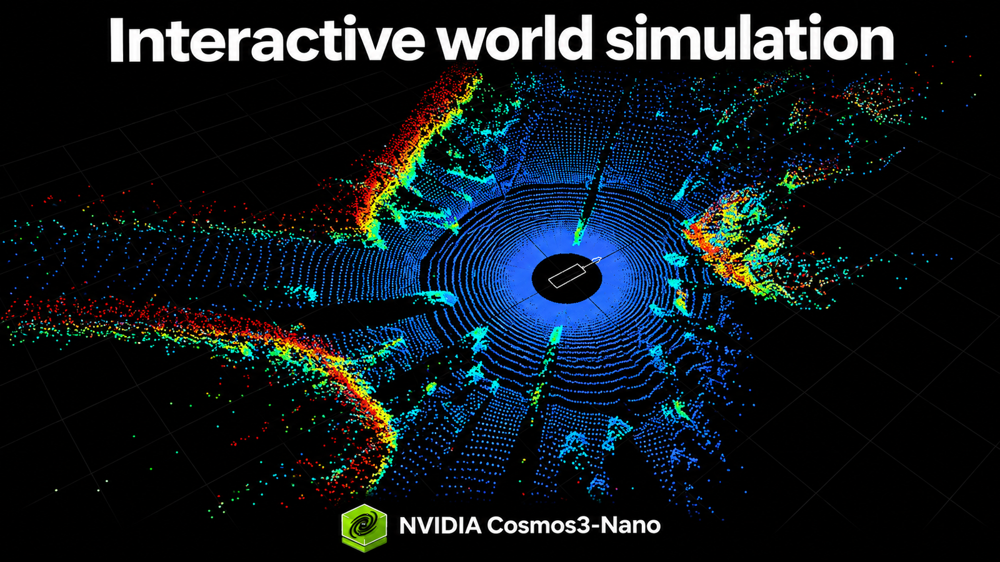

5 ноября NVIDIA опубликовала на Hugging Face открытые модели семейства Cosmos 3 для интерактивной симуляции мира. Логика такая: модель генерирует физически правдоподобное видео будущего — и это не ролик, а симуляция, которой можно управлять. В демо на примере вождения ролик переигрывали в обе стороны, меняли ракурсы и «отматывали» момент аварии, чтобы показать, как она выглядела бы при другом сценарии.
NVIDIA описывает Cosmos 3 как первую полностью открытую омнимодель для physical AI: за один проход она рассуждает о физическом мире, генерирует фотореалистичную симуляцию и выдаёт исполняемые действия для робота. В основе — архитектура mixture-of-transformers; по заявлениям компании, модель лидирует среди открытых моделей на бенчмарках физического ИИ (Physics-IQ и других). Весы уже доступны в трёх вариантах: лёгкая Cosmos3-Edge на 4 млрд параметров для устройств (до 15 Гц управления на Jetson Thor), и облачные Nano и Super — тяжёлые версии NVIDIA обещает выпустить 6 ноября под разрешительной лицензией, допускающей коммерческое использование.
Интерактивная симуляция закрывает главную боль робототехники — нехватку редких и опасных случаев. Виртуальный инцидент можно воспроизвести десятки раз, меняя погоду, ракурс и поведение людей, не рискуя железом. Фреймворк Cosmos при этом не зациклен на собственных моделях: к нему подключены Alpamayo, GR00T, Qwen и pi0.5 с Hugging Face, а развёртывать всё можно контейнерами NIM на большинстве серверных GPU NVIDIA — Nano требует до ~58 Гигабайт видеопамяти, Super — до ~150 в зависимости от режима.
Похожее направление есть и у нас: в январе 2025 года «Сбер» и Росавтодор договорились испытывать беспилотный грузовой транспорт в виртуальной среде — цифровой двойник трассы М-11 уже построен и включает участки с капитальным ремонтом. Это точечный проект под конкретную дорогу, а не открытая платформа для всех, однако сам подход — натренировать автономию на симулированных редких ситуациях — у обеих сторон один.